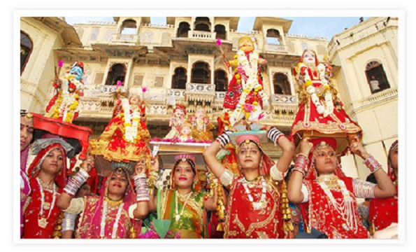

Rajasthan
- Home
- Food

- Fashion

- Festival
- Mewar Festival
- Urs Festival
- Camel Festival
Camel Festival
Organised in the honour of the ship of the desert, the Camel Festival is a spectacular festival celebrated in Bikaner. Just like the other celebrations of Rajasthan, this festival kicks off with great pomp and show. Celebrated every year in the pleasant January, the Camel Festival is a two-day long affair with a colourful parade of the decked up camels against the backdrop of the magnificent Junagadh Fort. It includes camel race, camel games and other cultural performances. Though celebrated to glorify the camels of Rajasthan, this festival also includes the traditional Rajasthani folk performances. The festival concludes with an awe-inspiring display of fireworks, illuminating the majestic skies of Bikaner.
Urs Festival
Usually held in the month of May and June, the Urs Festival is one of the major festivals celebrated at the venerated Ajmer Sharif Dargah. Hordes of pilgrims travel to this town, located to the West of Jaipur to visit this holy shrine. The Urs Festival commemorates the death anniversary of Khwaja Moinuddin Chisti, the revered Sufi Saint. The fair is held for six days because it is believed that the Khwaja Moinuddin cooked for six days before he left his mortal remains. His followers from all over the world throng Ajmer to seek his blessings during these six sacred days. - Camel Festival
Mewar Festival
The city of Udaipur comes alive with colours of festivities during the Mewar Festival which marks the advent of spring in the region. It is a major festival of Rajasthan and people from all over the globe flock to Udaipur to witness the glory of the town during this time. The whole town is decorated with bright lights and a joyous mood reigns in the air. This festival includes a number of practices, like dressing the idols of Isar and Gangaur and carrying them in a traditional procession through various parts of the city. People also engage in the cultural dance and songs, revealing the colourful culture of Rajasthan. - Urs Festival
- Mewar Festival